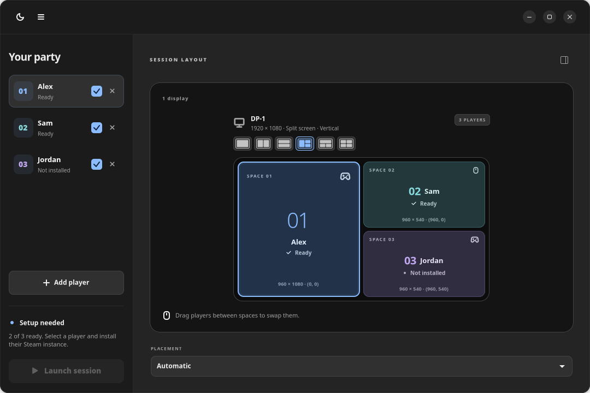
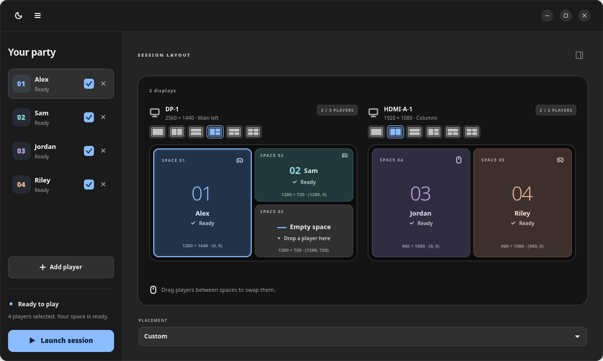
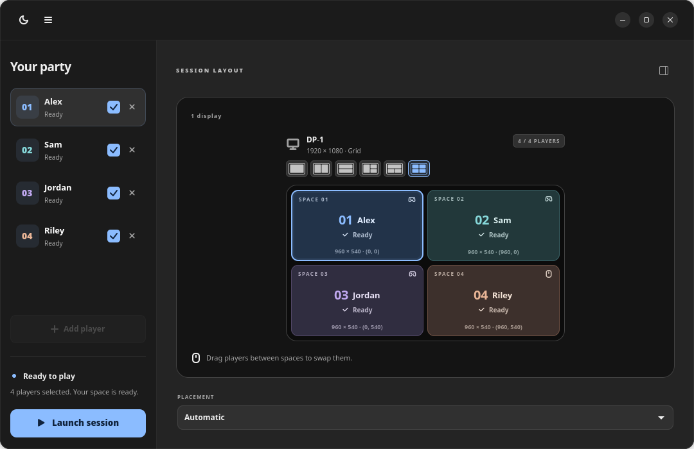
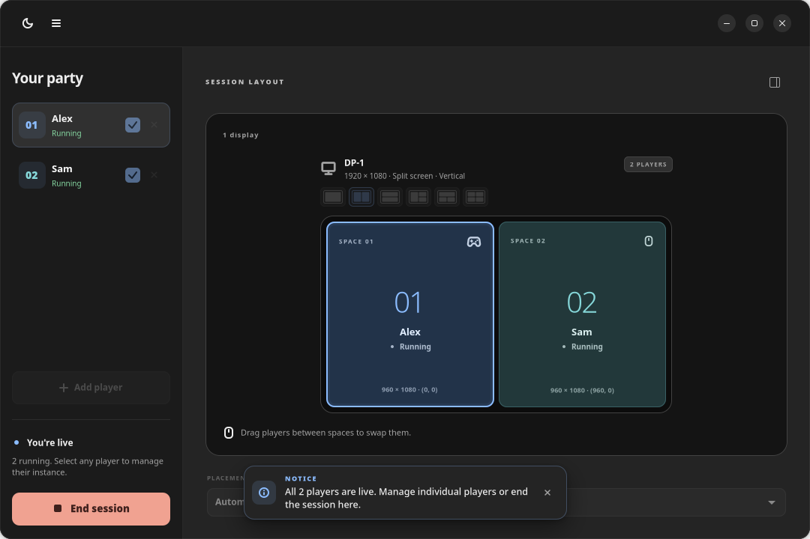
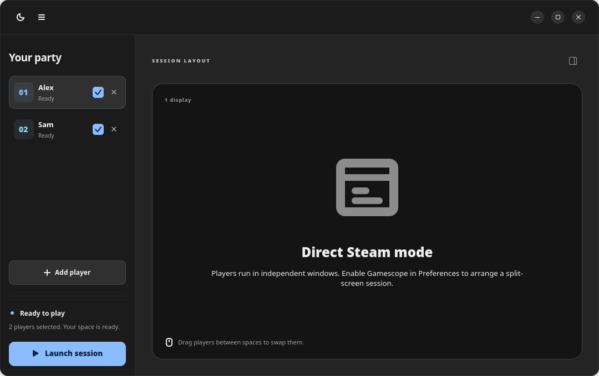

Linux Multi-Instance SteamMulti-Instância Steam para Linux
Twinverse DocumentationDocumentação do Twinverse
Run up to 8 Steam Big Picture instances on one Linux computer, in splitscreen or across monitors. Each player has a separate home and isolated Steam Input. Players can share installed games and audio outputs. By default they also share the host network; separate LAN addresses are optional.Execute até 8 instâncias do Steam Big Picture em um computador com Linux, em tela dividida ou em vários monitores. Cada jogador tem sua própria pasta home e Steam Input isolado. Os jogadores podem compartilhar os jogos instalados e as saídas de áudio. Por padrão, também usam a rede do host; endereços distintos na LAN são opcionais.
Twinverse — Three-pane workspace with the Party Roster on the left, live monitor tiling canvas in the center, and Player Setup inspector on the right.Twinverse — Área de trabalho em três painéis com a lista de jogadores (Party) à esquerda, pré-visualização interativa de monitores ao centro e o inspetor Player Setup à direita.
Per-Monitor Tiling & Drag-and-DropMoldes por Monitor e Arrastar-e-Soltar
Choose from 6 tiling templates per monitor (1 to 4 spaces each), mix templates across displays, and drag players directly between spaces.Escolha entre 6 moldes por monitor (1 a 4 espaços cada), combine moldes entre monitores e arraste jogadores diretamente entre os espaços.
Steam Input, Hotplug & Audio RoutingSteam Input, Hotplug e Saídas de Áudio
Assign a physical controller to one player. The input bridge reconnects it if it drops out mid-game. For sound, choose separate headsets or let several players use the same speakers.Atribua cada controle físico a um só jogador. Se o controle desconectar durante a partida, a ponte de entrada o reconhece quando ele voltar. Para o áudio, escolha fones individuais ou use as mesmas caixas de som para vários jogadores.
Shared Game Library & Any ProtonBiblioteca Compartilhada e Qualquer Proton
All players share your host steamapps/common/ and compatibilitytools.d/ (ProtonGE, etc.) while keeping independent saves and Steam accounts.Todos os jogadores compartilham steamapps/common/ e compatibilitytools.d/ (ProtonGE, etc.), mantendo saves e contas Steam independentes.
Shared or Isolated NetworkRede Compartilhada ou Isolada
Use the host network for online play and LAN discovery. If a local game needs a different IP per player, enable network isolation with pasta.Use a rede do host para jogar online e descobrir partidas na LAN. Se um jogo local precisar de um IP por jogador, ative o isolamento de rede com pasta.
Fair Play & Legal NoticeAviso Legal e Uso Legítimo
Twinverse does not support piracy and never modifies or patches Steam. Every player must sign into an official Steam account that legitimately owns (or has authorized access to) the games being played.O Twinverse não apoia pirataria e nunca modifica ou aplica patches no Steam. Cada jogador deve entrar em uma conta oficial do Steam que possua legitimamente (ou tenha acesso autorizado aos) jogos executados.
Before You BeginAntes de Começar
System Requirements & PreparationRequisitos do Sistema e Preparação
Twinverse orchestrates native Linux sandboxing and display tools already available on your host system—even when Twinverse itself runs inside Flatpak (via flatpak-spawn --host).O Twinverse orquestra ferramentas nativas de sandboxing e vídeo instaladas no seu sistema host—mesmo quando o próprio Twinverse é executado via Flatpak (usando flatpak-spawn --host).
ComponentComponente
StatusStatus
Purpose & NotesFunção e Observações
steam
Required (Host)Obrigatório (Host)
Native distribution package (not Flatpak Steam). Provides the Steam runtime and shared ~/.local/share/Steam/steamapps/common/ library.Pacote nativo da distribuição (não o Steam Flatpak). Fornece o runtime e a pasta compartilhada ~/.local/share/Steam/steamapps/common/.
gamescope
Required for tiling (host)Obrigatório para dividir a tela (host)
Native package. Micro-compositor that isolates resolution, refresh rate, cursor grabbing, and upscaling per player.Pacote nativo. Micro-compositor que isola resolução, taxa de atualização, captura de mouse e upscaling por jogador.
bwrap (bubblewrap)
Required (Host)Obrigatório (Host)
Creates isolated per-player home directories and masks /dev/input, pairing with Twinverse's bundled Rust userspace /dev/uinput shim and twinverse-input-bridge for isolated Steam Input and controller hotplug.Cria diretórios home isolados por jogador e mascara /dev/input, trabalhando com o shim nativo em Rust de /dev/uinput e o twinverse-input-bridge para Steam Input isolado e hotplug de controles.
pactl
Required (Host)Obrigatório (Host)
PulseAudio client tool for listing outputs on PulseAudio or PipeWire with PulseAudio support. An output can serve more than one player.Ferramenta cliente do PulseAudio para listar saídas no PulseAudio ou no PipeWire com suporte a PulseAudio. Uma saída pode atender a vários jogadores.
pasta (passt)
Optional (host)Opcional (host)
Not needed for the default shared network. For separate LAN IPs, install pasta on the host PATH (also for Flatpak) and enable Preferences → Engine → Isolate network.Não é necessário para a rede compartilhada padrão. Para usar IPs distintos na LAN, instale o pasta no PATH do host (inclusive no caso do Flatpak) e ative Preferências → Motor → Isolar rede.
input groupGrupo input
Required (host user)Obrigatório (usuário do host)
Set up device permissions before launching players, including players without a physical controller.Configure as permissões dos dispositivos antes de iniciar os jogadores, inclusive os que não usam controle físico.
mangoapp
OptionalOpcional
Used when Steam Deck tag is enabled in Preferences to provide performance overlay and Gamescope FPS limiter integration.Usado quando a opção Steam Deck tag está ativa nas Preferências para overlay de desempenho e limitador de FPS do Gamescope.
KDE Plasma 6.0+
Recommended DEDE Recomendado
Enables automatic KWin splitscreen & multi-monitor window tiling and panel dodging. On GNOME, Sway, Hyprland, or other DEs, everything works except automatic window placement (position windows manually).Ativa posicionamento automático via KWin em tela dividida e múltiplos monitores, além do modo dodge dos painéis. Em GNOME, Sway, Hyprland ou outros DEs, tudo funciona exceto o auto-tiling (posicione as janelas manualmente).
GPU Driver Requirements (Gamescope)Requisitos de Driver de GPU (Gamescope)
AMD:Mesa 20.3 or newerMesa 20.3 ou mais recente
Intel:Mesa 21.2 or newerMesa 21.2 ou mais recente
NVIDIA:Proprietary drivers 515.43.04+ or NVIDIA Open Kernel Module driversDrivers proprietários 515.43.04+ ou drivers NVIDIA Open Kernel Module
SteamOS & BazziteSteamOS e Bazzite
SteamOS (AMD) and Bazzite ship with Steam, Gamescope, Bubblewrap, and PipeWire pre-installed out of the box.SteamOS (AMD) e Bazzite já vêm com Steam, Gamescope, Bubblewrap e PipeWire pré-instalados por padrão.
Download & InstallDownload e Instalação
InstallationInstalação
Choose your preferred installation method. Official .flatpak bundles and .AppImage binaries are published on the GitHub Releases page.Escolha o método de instalação de sua preferência. Os pacotes oficiais .flatpak e binários .AppImage são publicados na página de Releases no GitHub.
Flatpak provides clean GTK4/libadwaita runtime isolation, automatic desktop menu integration, and separate configuration storage. Steam, Gamescope and Bubblewrap run on the host, as does pasta if you opt into network isolation.O Flatpak oferece isolamento limpo de runtime GTK4/libadwaita, integração automática ao menu de aplicativos e armazenamento separado das configurações. Steam, Gamescope e Bubblewrap rodam no host, assim como o pasta se você optar pelo isolamento de rede.
Download the latest Twinverse-*.flatpak from Releases.Baixe o arquivo Twinverse-*.flatpak mais recente em Releases.
Add the Flathub remote (needed so Flatpak can fetch the GNOME runtime) and install the bundle:Adicione o repositório Flathub (necessário para o Flatpak baixar o runtime GNOME) e instale o pacote:
flatpak remote-add --user --if-not-exists flathub https://flathub.org/repo/flathub.flatpakrepo
flatpak install --user Twinverse-*.flatpak
# Launch from terminal (or open Twinverse from your application menu)
flatpak run io.github.mall0r.Twinverse
A single portable executable with embedded zsync delta-update metadata (compatible with AppImageUpdate and Gear Lever). Make sure bubblewrap is installed on your host.Um único executável portátil com metadados zsync para atualizações incrementais (compatível com AppImageUpdate e Gear Lever). Garanta que o pacote bubblewrap esteja instalado no host.
# Make executable and run
chmod +x Twinverse-*.AppImage
./Twinverse-*.AppImage
Desktop Integration TipDica de Integração ao Sistema
Use Gear Lever to add Twinverse to your application launcher and manage updates automatically.Use o Gear Lever para integrar o Twinverse ao menu do sistema e gerenciar atualizações automaticamente.
Running from source requires Python 3.12+, GTK4, libadwaita, and PyGObject on the system. Having Rust (cargo with x86_64-unknown-linux-gnu and i686-unknown-linux-gnu targets) installed enables building the native Steam Input and hotplug libraries automatically (otherwise Twinverse falls back to static device mounts). The bundled run.sh script compiles resources, native libraries, and sets up .venv automatically.Executar a partir do código-fonte requer Python 3.12+, GTK4, libadwaita e PyGObject no sistema. Ter o Rust instalado (cargo com os alvos x86_64-unknown-linux-gnu e i686-unknown-linux-gnu) compila automaticamente as bibliotecas nativas de Steam Input e hotplug (sem ele, o Twinverse usa bind-mounts estáticos como fallback). O script run.sh compila recursos, bibliotecas nativas e cria o .venv automaticamente.
git clone https://github.com/mall0r/Twinverse.git
cd Twinverse
./run.sh
Developers can also use make dev, make build-native (builds native Rust artifacts into res/native/), make build, make test, make appimage, and make flatpak. See CONTRIBUTING.md for full development guidelines.Desenvolvedores também podem usar make dev, make build-native (compila os artefatos nativos em Rust em res/native/), make build, make test, make appimage e make flatpak. Consulte CONTRIBUTING.md para mais detalhes.
Know the InterfaceConheça a Interface
Interface AnatomyAnatomia da Interface
Twinverse uses a clean three-pane GTK4/libadwaita layout designed to keep party selection, visual monitor tiling, and per-player hardware configuration visible at once. On screens narrower than 1120sp, the right-hand Player Setup pane collapses cleanly into a slide-over drawer (toggle anytime with F9 or Alt+2).O Twinverse usa uma interface GTK4/libadwaita em três painéis pensada para manter a lista de jogadores, o mapa visual de monitores e a configuração de hardware por jogador visíveis ao mesmo tempo. Em telas menores que 1120sp, o painel direito Player Setup se recolhe automaticamente em uma gaveta lateral (alterne a qualquer momento com F9 ou Alt+2).
Interface Anatomy — Click the image to zoom in. Each numbered badge matches a core area explained below.Anatomia da Interface — Clique na imagem para ampliar. Cada número corresponde a uma área descrita abaixo.
1
Header Bar, Theme & App MenuCabeçalho, Tema e Menu
Left side switches Dark/Light appearance and opens the app menu (PreferencesCtrl+, and About Twinverse). The Player Setup drawer toggle (F9) sits on the right side of the Session Layout header.À esquerda ficam o botão de tema Claro/Escuro e o menu do app (PreferênciasCtrl+, e Sobre o Twinverse). O botão da gaveta Configuração do jogador (F9) fica à direita no cabeçalho do Layout da sessão.
2
Party Roster (1–8 Players)Lista de Jogadores (Party, 1–8)
Add players with Add Player, include/exclude players with checkboxes, inspect Steam readiness badges (Ready / Not installed / Running), click a row to inspect, or drag rows straight onto a monitor space.Adicione jogadores com Adicionar Jogador, marque/desmarque participantes, acompanhe o status do Steam (Pronto / Não instalado / Em execução), clique para configurar ou arraste diretamente para um espaço de monitor.
3
Session Status & Launch BarStatus da Sessão e Botão Iniciar
Shows live readiness (Ready to play, Setup needed, You're live) and the primary Launch Session / End Session button (Ctrl+Enter).Exibe o estado geral (Pronto para jogar, Configuração necessária, Sessão ativa) e o botão principal Iniciar Sessão / Encerrar Sessão (Ctrl+Enter).
4
Placement & Per-Monitor Tiling PickerPosicionamento e Seletor de Moldes
Switch between Automatic and Custom placement at the top, and pick one of 6 visual tiling templates independently for every connected display.Alterne entre posicionamento Automatic e Custom no topo e escolha um dos 6 moldes visuais de divisão independentemente para cada monitor conectado.
5
Interactive Player SpacesEspaços Interativos de Jogadores
True-aspect preview of each Gamescope region showing player name, index, readiness dot, controller badge (hover to see the assigned gamepad name), and mouse-grab icon. Click to select or drag-and-drop to swap or move across monitors.Pré-visualização em proporção real de cada região do Gamescope com nome, índice, status, selo de controle (passe o mouse para ver o nome completo do controle) e ícone de captura de mouse. Clique para selecionar ou arraste para trocar e mover entre monitores.
6
Player Setup InspectorInspetor Player Setup
Inline name editor, single-instance action button (Install Steam / Start Player / Stop Player), exclusive Controller & Grab mouse, shareable Audio output, Guest IP, and per-player Environment variables.Edição de nome inline, ação individual (Instalar Steam / Iniciar Jogador / Parar Jogador), Controle exclusivo e Capturar mouse, saída de Áudio compartilhável, IP convidado e Variáveis de ambiente por jogador.
From Zero to SplitscreenDo Zero à Tela Dividida
Step-by-Step GuideGuia Passo a Passo
Follow these five steps the first time you set up Twinverse. Once your players are signed into Steam, future gaming nights take a single click on Launch Session.Siga estes cinco passos na primeira vez em que configurar o Twinverse. Depois que os jogadores fizerem login no Steam, as próximas sessões exigem apenas um clique em Iniciar Sessão.
On modern Linux desktops (systemd-logind + uaccess), standard gamepads already work out of the box without changing groups—and Twinverse never touches the host's /dev/uinput (both Steam Input and the placeholder joystick run in userspace). Only run the command below and sign out/reboot if a generic controller or USB adapter fails to respond under /dev/input:Em desktops Linux modernos (systemd-logind + uaccess), controles padrão já funcionam sem alterar grupos—e o Twinverse nunca toca no /dev/uinput do host (tanto o Steam Input quanto o joystick substituto rodam em userspace). Só execute o comando abaixo e saia da sessão/reinicie se algum controle genérico ou adaptador USB não responder em /dev/input:
Build Your Party (1 to 8 Players)Monte o Grupo (1 a 8 Jogadores)
Start in the left-hand Your party sidebar:Comece pela barra lateral esquerda Seu grupo:
Click Add Player to add up to 8 players (home_1 through home_8). Each slot keeps its own Steam account, saves, and hardware bindings.Clique em Adicionar Jogador para adicionar até 8 jogadores (home_1 a home_8). Cada slot mantém sua própria conta Steam, saves e dispositivos.
Use the checkbox next to each player to include or temporarily sit them out of the next session without losing any configuration. Excluded players dim out and free up their screen space.Use a caixa de seleção ao lado de cada jogador para incluí-lo ou deixá-lo de fora da próxima sessão sem perder configurações. Jogadores desmarcados ficam esmaecidos e liberam espaço na tela.
Click the × button on a player row to hide them from the roster. Their saved settings and disk home stay intact—clicking Add Player later restores the lowest unused slot automatically.Clique no botão × em uma linha para remover o jogador da lista. As configurações e a pasta home permanecem intactas—clicar em Adicionar Jogador depois restaura automaticamente o menor slot livre.
Click any player row to open their profile in Player Setup, where you can also click their name to rename them (up to 32 characters; Enter saves, Esc cancels).Clique em qualquer jogador para abrir seu perfil no Player Setup, onde também é possível clicar no nome para renomeá-lo (até 32 caracteres; Enter confirma, Esc cancela).

Step 1 — Party Roster: Three players added. Alex and Sam are Ready, while Jordan shows Not installed, causing the footer status to indicate Setup needed until Steam is initialized for Jordan.Passo 1 — Party Roster: Três jogadores adicionados. Alex e Sam estão Ready, enquanto Jordan mostra Not installed, fazendo o rodapé exibir Setup needed até o Steam ser inicializado para Jordan.
2
Choose Monitor Tiling & Arrange Player SpacesEscolha os Moldes de Monitor e Posicione os Jogadores
Connect the displays you want to use. Session Layout refreshes its preview automatically when a monitor is plugged in or removed, or its geometry or refresh rate changes. Choose one of the six templates below each display. The choice is saved by connector (e.g., DP-1); Gamescope uses the tile size and detected refresh rate at launch:Conecte os monitores que pretende usar. A prévia do Layout da sessão se atualiza automaticamente ao conectar ou remover um monitor ou ao mudar sua geometria ou taxa de atualização. Escolha um dos seis moldes abaixo de cada tela. A escolha é salva por conector (por exemplo, DP-1); ao iniciar, o Gamescope usa o tamanho do espaço e a taxa de atualização detectada:
Fullscreen 1 space
One full-monitor space. Ideal for dedicated multi-monitor setups.Um espaço ocupando o monitor inteiro. Ideal para múltiplos monitores.
Columns 2 spaces
Side-by-side vertical split. Great for ultrawide and 16:9 co-op.Divisão vertical lado a lado. Ótima para monitores ultrawide e 16:9.
Rows 2 spaces
Top-and-bottom horizontal split for wider field of view.Divisão horizontal empilhada para maior campo de visão lateral.
Main left 3 spaces
Tall main space on the left + two stacked spaces on the right.Espaço principal à esquerda + dois espaços empilhados à direita.
Main top 3 spaces
Wide main space on top + two side-by-side spaces below.Espaço principal largo no topo + dois espaços lado a lado abaixo.
Grid 4 spaces
Classic 2×2 four-player splitscreen quadrants on one monitor.Clássica tela dividida em grade 2×2 para quatro jogadores em um monitor.
Drag-and-Drop Placement & Overflow ProtectionPosicionamento por Arrastar-e-Soltar e Proteção de Excedentes
Drag & drop anywhere: Grab a player tile on the canvas (or a player row in the Party Roster) and drop it onto any empty or occupied space—even on a different monitor. Occupied spaces swap smoothly with animated card motion, and holding near the top/bottom canvas edge auto-scrolls tall multi-monitor setups.Arraste para qualquer lugar: Pegue um bloco no canvas (ou uma linha da lista Party) e solte sobre qualquer espaço vazio ou ocupado—inclusive em outro monitor. Espaços ocupados trocam suavemente com animação, e segurar perto das bordas superior/inferior faz rolagem automática.
Automatic vs. Custom placement: The first manual drag automatically switches Placement to Custom. Switch back to Automatic anytime to reset to sequential order while keeping your chosen monitor templates.Posicionamento Automatic vs. Custom: O primeiro arraste manual muda Placement automaticamente para Custom. Volte para Automatic a qualquer momento para restaurar a ordem sequencial sem perder os moldes escolhidos.
Players without a space: If your selected templates have fewer total spaces than active players, extra players appear in a warning tray below the monitors and launching is safely blocked until you pick a larger template, drag them into an empty space, or uncheck them.Jogadores sem espaço: Se os moldes escolhidos tiverem menos espaços do que jogadores ativos, os excedentes aparecem em uma bandeja de aviso abaixo dos monitores e o início da sessão fica bloqueado até que você escolha um molde maior, arraste-os para um espaço livre ou os desmarque.

Mixed Multi-Monitor Layout:DP-1 (2560×1440) uses Main left (with an intentional Empty space) while HDMI-A-1 (1920×1080) uses Columns, with Custom placement active.Layout Misto em Múltiplos Monitores:DP-1 (2560×1440) usa Main left (com um espaço vazio proposital) enquanto HDMI-A-1 (1920×1080) usa Columns, com posicionamento Custom ativo.

4-Player Grid: Four players tiled in equal quadrants on a single monitor, each displaying its assigned gamepad or mouse-grab icon directly on the card.Grade para 4 Jogadores: Quatro jogadores divididos em quadrantes iguais em um único monitor, exibindo os ícones de controle e captura de mouse diretamente em cada espaço.
Overflow Protection: Three players active on a 2-space Columns layout. Jordan appears under Players without a space and can be dragged directly into a slot once a 3- or 4-space template is picked.Proteção contra Excedentes: Três jogadores ativos em um molde Columns de 2 espaços. Jordan aparece em Players without a space e pode ser arrastado diretamente após escolher um molde maior.
Select each player (from the Party Roster or by clicking their space on the canvas) to configure their hardware in the right-hand Player Setup inspector:Selecione cada jogador (na lista Party ou clicando no espaço no canvas) para configurar o hardware no painel direito Player Setup:
Controls: Plug in or turn on the gamepad and select it from the searchable list. The list refreshes automatically on hotplug; use the refresh icon or F5 if needed. A physical controller belongs to one player at a time. In other players’ lists it shows the owner's number (e.g., 01) and cannot be selected. To transfer it, select None or a different pad for its owner first.Controles: Conecte ou ligue o controle e selecione-o na lista pesquisável. A lista se atualiza automaticamente ao conectar ou desconectar dispositivos; use o ícone de atualização ou F5 se necessário. Cada controle físico pertence a um só jogador por vez. Nas listas dos demais, ele exibe o número do dono (por exemplo, 01) e não pode ser selecionado. Para transferi-lo, selecione Nenhum ou outro controle para o dono atual primeiro.
Read the selection dot: Blue marks the current choice; yellow and (Disconnected) mean the assigned device is absent. Twinverse saves its ID and name, even across restarts. Leave it selected: the native bridge can wait for it at launch or reconnect it mid-game. Selecting None clears the assignment and uses a virtual joystick instead.Observe o ponto de seleção: Azul indica a escolha atual; amarelo e (Desconectado) indicam que o dispositivo atribuído está ausente. O Twinverse guarda o ID e o nome mesmo após reiniciar. Mantenha a seleção: a ponte nativa pode aguardar o controle ao iniciar ou reconectá-lo durante o jogo. Selecionar Nenhum remove a atribuição e usa um joystick virtual no lugar.
Grab mouse: Only one player can grab the mouse. Turn it off for the current player before enabling it for another. The mouse icon marks the space whose Gamescope receives --force-grab-cursor.Capturar mouse: Só um jogador pode capturar o mouse. Desative a opção para o jogador atual antes de ativá-la para outro. O ícone de mouse indica o espaço cujo Gamescope recebe --force-grab-cursor.
Audio → Output device: Choose Default for the system output, or select a PipeWire/PulseAudio sink (PULSE_SINK). The same blue/yellow dots distinguish a current choice from a remembered, disconnected output. Number badges (e.g., 01, 02) show who else uses that sink; unlike a controller, it is still selectable.Áudio → Dispositivo de saída: Escolha Padrão para usar a saída do sistema ou selecione uma saída PipeWire/PulseAudio (PULSE_SINK). Os mesmos pontos azul e amarelo distinguem a seleção atual de uma saída salva, mas desconectada. Os números (por exemplo, 01, 02) indicam quem mais usa a saída; ao contrário de um controle, ela continua disponível para seleção.
Network → Guest IP: Skip this field on the default shared network. It is disabled, but any saved value is kept. Only for isolation with pasta, leave it blank for automatic selection or enter an unused address on your subnet (e.g., 192.168.1.240/24 on a 192.168.1.0/24 LAN).Rede → IP convidado: Pule este campo na rede compartilhada padrão. Ele fica desabilitado, mas preserva o valor salvo. Somente para o isolamento com pasta, deixe-o em branco para seleção automática ou informe um endereço livre na sua sub-rede (por exemplo, 192.168.1.240/24 em uma LAN 192.168.1.0/24).
Environment variables: Expand this section and click Add Variable to inject custom key/value pairs directly into the player's bwrap sandbox (e.g., PROTON_ENABLE_WAYLAND=1, MANGOHUD=1). Values are passed verbatim and override global defaults.Variáveis de ambiente: Expanda esta seção e clique em Adicionar Variável para injetar pares chave/valor diretamente na sandbox bwrap do jogador (ex.: PROTON_ENABLE_WAYLAND=1, MANGOHUD=1). Os valores são preservados literalmente e sobrescrevem padrões globais.
Step 3 — Player Setup Inspector: Configuring dedicated audio output, optional fixed Guest IP, and per-player environment variables such as PROTON_ENABLE_WAYLAND and MANGOHUD.Passo 3 — Inspetor Player Setup: Configurando saída de áudio dedicada, Guest IP fixo opcional e variáveis de ambiente individuais como PROTON_ENABLE_WAYLAND e MANGOHUD.
4
Install Steam & Sign In (First Time Per Player)Instale o Steam e Faça Login (Primeira Vez por Jogador)
Every brand-new player slot starts with a clean isolated home directory and shows Not installed. Before launching a full Gamescope session, initialize Steam once per player:Cada novo slot começa com uma pasta home isolada limpa e exibe Não instalado. Antes de iniciar uma sessão completa com Gamescope, inicialize o Steam uma vez por jogador:
Select a player marked Not installed and click Install Steam in Player Setup. Twinverse launches Steam directly inside Bubblewrap (without Gamescope) so you can see the desktop login window clearly.Selecione um jogador marcado como Não instalado e clique em Instalar Steam em Configuração do jogador. O Twinverse abre o Steam diretamente dentro do Bubblewrap (sem Gamescope) para facilitar o login em modo desktop.
Wait a minute for Steam to download its client runtime into that player's isolated home, then sign in to that player's Steam account. (Your installed games from the host library appear automatically—no re-downloading!)Aguarde o Steam baixar o runtime do cliente na home isolada do jogador e faça login na conta Steam desse jogador. (Os jogos já instalados no host aparecem automaticamente—sem baixar de novo!)
Recommended: Inside Steam, open Settings → Downloads and disable Enable Shader Pre-Caching to save disk space and avoid duplicate shader download queues across instances.Recomendado: Dentro do Steam, abra Configurações → Downloads e desative Ativar download prévio de sombreadores para economizar espaço em disco e evitar filas duplicadas entre instâncias.
Close that Steam window. Twinverse automatically verifies the installation, switches the player's badge to Ready, and enables Launch Session. (Later, you can always click Start Player to open a single player in desktop mode for account or Steam settings changes.)Feche essa janela do Steam. O Twinverse verifica a instalação automaticamente, muda o status para Pronto e libera o botão Iniciar Sessão. (Depois, você pode usar Iniciar Jogador a qualquer momento para abrir um único jogador em modo desktop e ajustar configurações.)
First-Time Initialization: Selecting an unverified player displays the highlighted Install Steam button in Player Setup.Inicialização Inicial: Ao selecionar um jogador ainda não verificado, o botão Install Steam fica em destaque no Player Setup.
Save Disk Space: Disabling Shader Pre-Caching under Steam → Settings → Downloads avoids redundant cache downloads in each player home.Economize Espaço em Disco: Desativar o Download Prévio de Sombreadores em Steam → Configurações → Downloads evita downloads redundantes em cada instância.
5
Launch Your Session & PlayInicie a Sessão e Jogue
Once every checked player is Ready and assigned a valid space, click Launch Session (or press Ctrl+Enter). Here is what Twinverse orchestrates behind the scenes:Assim que todos os jogadores marcados estiverem Pronto e alocados em espaços válidos, clique em Iniciar Sessão (ou pressione Ctrl+Enter). Veja o que o Twinverse orquestra automaticamente:
KWin & KDE Panel Prep (KDE Plasma): Registers the KWin layout script and temporarily sets KDE panels to dodgewindows so games get the full screen cleanly.Preparação KWin e Painéis (KDE Plasma): Registra o script de layout do KWin e coloca os painéis do KDE temporariamente em dodgewindows para que os jogos ocupem toda a tela.
Staggered Startup: Starts each Steam Big Picture instance sequentially (5-second stagger) inside its own twinverse-input-bridge → [pasta] → bwrap → gamescope stack (pasta is added only when Isolate network is enabled), while showing a live single-line Steam startup log in Player Setup and tracking steamwebhelper readiness—even long Steam client updates won't time out prematurely.Inicialização Escalonada: Inicia cada instância do Steam Big Picture sequencialmente (intervalo de 5s) dentro da pilha twinverse-input-bridge → [pasta] → bwrap → gamescope (o pasta só entra quando Isolar rede está ativado), exibindo uma linha de log do Steam em tempo real em Configuração do jogador e acompanhando o carregamento do steamwebhelper—sem timeout artificial.
Auto-Minimize & Live Control: Once every instance is live, Twinverse minimizes itself out of the way (and sends desktop notifications if it's in the background). You can return to Twinverse anytime to stop a single player with Stop Player or cleanly end the entire session with End Session (which restores KDE panels and terminates lingering child/Wine processes safely).Minimização Automática e Controle ao Vivo: Quando todas as instâncias estiverem prontas, o Twinverse se minimiza automaticamente (enviando notificações se estiver em segundo plano). Volte ao app quando quiser para encerrar um jogador individual (Parar Jogador) ou encerrar toda a sessão com Encerrar Sessão (restaurando os painéis do KDE e encerrando processos filhos/Wine com segurança).
End the Session from a Controller (HOME + L3): Press HOME/Guide + L3 (left stick click) together on the same controller—no hold required. The End Session confirmation opens immediately with Cancel selected. Only the controller that opened it can navigate it, and the native bridge pauses that controller's input to Steam and the game while other players keep playing. Release both buttons, choose with the D-pad or left stick, and press A to confirm or B (Esc) to cancel. See Keyboard & Controller Shortcuts.Encerrar a Sessão pelo Controle (HOME + L3): Pressione HOME/Guia + L3 (clique no analógico esquerdo) juntos no mesmo controle—sem precisar segurar. A confirmação Encerrar Sessão abre na hora com Cancelar selecionado. Só o controle que abriu o diálogo pode navegar nele, e a ponte nativa suspende a entrada desse controle no Steam e no jogo enquanto os demais continuam jogando. Solte os dois botões, escolha com o direcional ou o analógico esquerdo e pressione A para confirmar ou B (Esc) para cancelar. Veja Atalhos de Teclado e Controle.

Step 5 — Live Session: Both players show Running, the footer displays You're live with a red End Session action, Player Setup offers Stop Player, and a non-intrusive toast confirms launch.Passo 5 — Sessão Ativa: Ambos os jogadores exibem Em execução, o rodapé mostra Sessão ativa com o botão vermelho Encerrar Sessão, a Configuração do jogador oferece Parar Jogador e o toast flutuante confirma a inicialização.
Crash Recovery Built-InRecuperação Automática de Sessão
Twinverse records active instance PIDs in $XDG_STATE_HOME/twinverse/instances.json. If the UI is ever closed unexpectedly while players are still playing, reopening Twinverse automatically reattaches to surviving instances so you can still manage or cleanly stop them.O Twinverse registra os PIDs ativos em $XDG_STATE_HOME/twinverse/instances.json. Se a interface fechar inesperadamente enquanto o pessoal ainda está jogando, basta reabrir o Twinverse para reconectar automaticamente às instâncias vivas e continuar gerenciando ou encerrando-as normalmente.
Complete Feature ReferenceReferência Completa de Funcionalidades
All Features in DetailTodas as Funcionalidades em Detalhe
Preferences Window & Instance Data ToolsJanela de Preferências e Ferramentas de Instância
Open Preferences from the header menu or by pressing Ctrl+,. It is organized into two tabs: Engine and Instance data.Abra as Preferências pelo menu do cabeçalho ou pressionando Ctrl+,. Ela é dividida em duas abas: Motor e Dados das instâncias.
SettingOpção
DefaultPadrão
What It DoesO Que Faz
LanguageIdioma
System defaultPadrão do sistema
Switches the UI live between System default, English, and Português (Brasil) without restarting.Alterna o idioma da interface na hora entre Padrão do sistema, English e Português (Brasil) sem reiniciar.
Use GamescopeUsar Gamescope
On
Runs each player inside a dedicated Gamescope compositor sized to its canvas space. Turning this off switches the center pane to Direct Steam mode, launching Steam directly inside Bubblewrap (handy for debugging or systems without Gamescope).Executa cada jogador dentro de um compositor Gamescope dimensionado ao espaço do canvas. Desativar alterna o painel central para Direct Steam mode, abrindo o Steam diretamente no Bubblewrap (útil para depuração ou sistemas sem Gamescope).
Steam Deck tag
On
Passes -steamdeck to Steam and enables --mangoapp with an isolated per-instance mangoapp.conf, unlocking SteamOS performance overlays and the Gamescope FPS limiter menu.Passa -steamdeck ao Steam e ativa --mangoapp com um mangoapp.conf isolado por instância, habilitando overlays de desempenho e o limitador de FPS do Gamescope.
Gamescope WSI
On (Wayland)
Controls the ENABLE_GAMESCOPE_WSI environment variable (1 when enabled, 0 when disabled). Disabling it can resolve Vulkan swapchain glitches on certain GPUs or drivers.Controla a variável ENABLE_GAMESCOPE_WSI (1 ativo, 0 desativado). Desativar pode resolver problemas de swapchain Vulkan em certas GPUs ou drivers.
Gamescope Pointer CompatibilityCompatibilidade do ponteiro no Gamescope
OffDesativado
Works around Gamescope #2582 by replacing touch passthrough (mode 4) with left-click emulation (mode 1). May affect touchscreen gestures. Restart the session to apply. A gamescope_touch_click_mode set in the Twinverse profile takes precedence.Contorna a issue #2582 do Gamescope ao substituir o repasse de toque (modo 4) pela emulação de clique esquerdo (modo 1). Pode afetar gestos na tela sensível ao toque. Reinicie a sessão para aplicar. Uma variável gamescope_touch_click_mode definida no perfil do Twinverse tem prioridade.
Isolate network
Off
Controls per-instance rootless network namespaces via pasta across native, Flatpak, and sandboxed terminal launches. Off by default to share the host network (recommended for online multiplayer and LAN discovery); turn it on for local LAN games or dedicated servers that require distinct local IPs. When off, the per-player Guest IP field is disabled while preserving any saved IP value.Controla namespaces de rede sem root por instância via pasta em execuções nativas, Flatpak e terminais na sandbox. Desativado por padrão para compartilhar a rede do host (recomendado para multiplayer online e descoberta LAN); ative para jogos em LAN ou servidores dedicados que exigem IPs locais distintos. Quando desativado, o campo Guest IP por jogador fica desabilitado preservando qualquer IP salvo.
Reset All SettingsRedefinir Tudo
—
Restores all Twinverse preferences and player bindings to defaults while preserving your Steam login folders on disk.Restaura todas as preferências e vínculos do Twinverse ao padrão, preservando as pastas de login do Steam em disco.
The Instance data tab lists every player's isolated home directory (home_1 through home_8) with three quick actions per slot:A aba Instance data lista o diretório home isolado de cada jogador (home_1 a home_8) com três ações rápidas por slot:
Open home folder:Abrir pasta home:Opens the player's isolated directory in your file manager (xdg-open) to inspect saves, configs, or Proton prefixes.Abre o diretório isolado do jogador no gerenciador de arquivos (xdg-open) para acessar saves, configs ou prefixos Proton.
Open sandboxed terminal:Abrir terminal na sandbox:Launches an interactive bash -i shell inside that player's exact bwrap (+ pasta when network isolation is enabled) + PULSE_SINK environment using your host terminal (auto-detects konsole, gnome-terminal, kgx, xfce4-terminal, mate-terminal, kitty, alacritty, foot, x-terminal-emulator, or xterm).Abre um shell bash -i interativo exatamente dentro do ambiente bwrap (+ pasta quando o isolamento de rede está ativo) + PULSE_SINK daquele jogador usando o terminal do host (detecta automaticamente konsole, gnome-terminal, kgx, xfce4-terminal, mate-terminal, kitty, alacritty, foot, x-terminal-emulator ou xterm).
Reset player:Redefinir jogador:Permanently deletes that player's home_N directory and resets their configuration (with a confirmation dialog).Remove permanentemente a pasta home_N daquele jogador e limpa sua configuração (com confirmação prévia).
Preferences → Engine: Configure Gamescope, Steam Deck tag, Gamescope WSI, Isolate network, or reset all profile settings.Preferências → Engine: Configure Gamescope, Steam Deck tag, Gamescope WSI, Isolate network ou redefina as configurações do perfil.
Preferences → Instance data: Browse each player's isolated home, launch a sandboxed shell inside their container, or cleanly wipe a slot.Preferências → Instance data: Abra a pasta isolada de cada jogador, inicie um terminal dentro da sandbox ou zere um slot com segurança.

Direct Steam Mode: When Use Gamescope is disabled, Twinverse explains that monitor tiling is bypassed and provides a one-click shortcut back to Preferences.Direct Steam Mode: Quando Use Gamescope está desativado, o Twinverse informa que o auto-tiling está desabilitado e oferece um atalho direto para as Preferências.
Shared Game Library, Different Games & Custom ProtonBiblioteca Compartilhada, Jogos Diferentes e Proton Personalizado
Zero game duplication:Zero duplicação de jogos:Twinverse bind-mounts your host ~/.local/share/Steam/steamapps/common/ into every instance and synchronizes appmanifest_*.acf files automatically, so every player sees already-installed titles instantly.O Twinverse monta ~/.local/share/Steam/steamapps/common/ do host em todas as instâncias e sincroniza os arquivos appmanifest_*.acf automaticamente, exibindo os jogos instalados de imediato.
Any Proton version:Qualquer versão do Proton:~/.local/share/Steam/compatibilitytools.d/ is shared across all sandboxes, so custom runners like GE-Proton installed once on the host work for every player.A pasta ~/.local/share/Steam/compatibilitytools.d/ é compartilhada entre todas as sandboxes, então versões customizadas como o GE-Proton funcionam para todos os jogadores.
Play different games simultaneously:Jogue jogos diferentes ao mesmo tempo:Instances are completely independent—Player 1 can play a co-op title while Player 2 plays an entirely different game on another monitor or splitscreen space.As instâncias são totalmente independentes—o Jogador 1 pode jogar um título enquanto o Jogador 2 joga outro completamente diferente em outro monitor ou espaço da tela.
Shared Host Network, Steam IPC & Optional pasta IsolationRede Compartilhada do Host, IPC do Steam e Isolamento Opcional com pasta
For online multiplayer or LAN discovery, leave Preferences → Engine → Isolate network off (the alpha.3 default). Instances use the host's network stack, so the kernel allocates UDP source ports across players instead of separate pasta helpers competing for the same port. An existing profile keeps its saved setting.Para multiplayer online ou descoberta de partidas na LAN, deixe Preferências → Motor → Isolar rede desativado (padrão da alpha.3). As instâncias usam a pilha de rede do host. Assim, o kernel distribui as portas de origem UDP entre os jogadores, sem que processos separados do pasta disputem a mesma porta. Perfis existentes mantêm a opção salva.
Steam3Master IPC (shared mode): Each instance gets its own TCP loopback endpoint via the environment variable steam_master_ipc_name_override (e.g., 127.0.0.1:61100 for player 01 if free). This keeps Big Picture and games talking to their own Steam client instead of losing controller input to another instance or host Steam. This is not a game-server port.IPC do Steam3Master (rede compartilhada): Cada instância recebe uma porta TCP de loopback própria pela variável de ambiente steam_master_ipc_name_override (por exemplo, 127.0.0.1:61100 para o jogador 01 se estiver livre). Assim, o Big Picture e os jogos falam com o cliente Steam correto e não perdem a entrada do controle para outra instância ou para o Steam do host. Essa porta não é a do servidor do jogo.
Private IP at Steam sign-in (both modes): Twinverse passes -private_ip_override 192.0.2.1 for player 01, 192.0.2.2 for player 02, and so on. Only the private IP reported to Steam changes. This avoids Session Replaced when the host and an instance sign in to the same account. It does not assign a LAN address, change routing, or replace the game's licensing requirements.IP privado no login do Steam (nos dois modos): O Twinverse passa -private_ip_override 192.0.2.1 para o jogador 01, 192.0.2.2 para o 02 e assim por diante. Só muda o IP privado informado ao Steam. Isso evita o erro Session Replaced quando o host e uma instância entram na mesma conta. Não atribui um endereço na LAN, não altera o roteamento nem dispensa a licença do jogo.
When to use pasta: If a LAN game or a local dedicated server needs distinct local addresses, install passt (provides pasta) on the host and turn on Isolate network before launch. Bubblewrap then creates a network namespace per player and pasta connects it to the network without root.Quando usar pasta: Se um jogo em LAN ou servidor dedicado local precisar de endereços distintos, instale o pacote passt (que fornece o pasta) no host e ative Isolar rede antes de iniciar. O Bubblewrap cria um namespace de rede por jogador e o pasta o conecta à rede sem exigir root.
Guest IP (isolated mode only): Leave blank to probe for a free IPv4 on the host's subnet, or enter a different unused IPv4 or CIDR for each player. If no free address is found automatically, pasta uses the host address inside the namespace. Turning isolation off disables the field without erasing it.IP convidado (somente no modo isolado): Deixe em branco para procurar um IPv4 livre na sub-rede do host ou informe um IPv4 livre diferente para cada jogador, com ou sem prefixo CIDR. Se a busca automática não encontrar um endereço livre, o pasta usa o endereço do host dentro do namespace. Desativar o isolamento desabilita o campo sem apagar seu valor.
Missing helper: Even if isolation is enabled, launches fall back to the shared host network if pasta is not on the host PATH. The same choice applies to native, Flatpak and sandboxed terminal launches.Sem o auxiliar: Mesmo com o isolamento ativado, as instâncias usam a rede compartilhada se o pasta não estiver no PATH do host. A mesma regra vale para execuções nativas, via Flatpak e para o terminal da sandbox.
Pure-Rust Virtual /dev/uinput, Host Isolation & Controller Hotplug/dev/uinput Virtual em Rust, Isolamento do Host e Hotplug de Controles
Full Isolated Steam Input:Steam Input Completo e Isolado:Twinverse ships pure-Rust 64-bit and 32-bit interposition libraries (libtwinverse_uinput.so and libtwinverse_udev.so, deferred past Gamescope via GAMESCOPE_RUNTIME_SETUP). Virtual controllers created by Steam Input stay strictly inside each player's private Unix sockets (~/.tw-in/sock/), never touching the host kernel's /dev/uinput and never leaking between instances.O Twinverse inclui bibliotecas nativas 64 e 32 bits em Rust puro (libtwinverse_uinput.so e libtwinverse_udev.so, carregadas após o Gamescope via GAMESCOPE_RUNTIME_SETUP). Controles virtuais criados pelo Steam Input ficam restritos aos sockets Unix privados de cada jogador (~/.tw-in/sock/), sem tocar no /dev/uinput do host e sem vazar entre instâncias.
Host Steam Isolation (EVIOCGRAB):Isolamento em Relação ao Steam do Host (EVIOCGRAB):While a player's instance runs, twinverse-input-bridge requests exclusive evdev access (EVIOCGRAB) on that assigned physical controller so pressing HOME/Guide never pulls the host Steam client to the foreground. Unassigned pads are never grabbed; stopping the instance or unplugging releases the grab, and reconnecting re-acquires it automatically.Enquanto a instância do jogador está em execução, o twinverse-input-bridge solicita acesso evdev exclusivo (EVIOCGRAB) ao controle físico atribuído, impedindo que pressionar HOME/Guia traga o Steam do host para a frente. Controles não atribuídos não são capturados; parar a instância ou desconectar libera o controle, e reconectar retoma a captura automaticamente.
Mid-Session Hotplug, Sibling Isolation & Overlay Muting:Hotplug em Sessão, Controles Idênticos e Pausa no Diálogo:The host bridge forwards each physical gamepad to a persistent synthetic /dev/input/event3000, emits neutralizer events on unplug so buttons and sticks never get stuck, keeps identical sibling controllers separated, and reconnects automatically mid-game. When HOME + L3 opens the End Session overlay, the bridge neutralizes held inputs, pauses that player's evdev and hidraw delivery via tw_input.mute while keeping other players active, and suppresses trailing key-up releases on close.A ponte no host encaminha cada controle físico para um /dev/input/event3000 sintético persistente, emite eventos de neutralização ao desconectar para não travar botões/analógicos, mantém controles idênticos separados e reconecta automaticamente durante a partida. Quando HOME + L3 abre a confirmação Encerrar Sessão, a ponte neutraliza botões e eixos pressionados, pausa o evdev e o hidraw daquele jogador via tw_input.mute mantendo os demais ativos e descarta eventos de soltura pendentes ao fechar.
Exclusive Ownership, Disconnected Memory & Auto-Refresh:Exclusividade, Memória ao Desconectar e Atualização Automática:Each physical controller belongs to at most one player; other players see the owner's number badge (e.g., 01) and cannot select it until the owner switches to None or another pad. Profiles remember PHYSICAL_DEVICE_ID and PHYSICAL_DEVICE_NAME across disconnects and restarts (yellow dot + (Disconnected)), and an inotify + GDK monitor automatically refreshes controller and display lists on hotplug.Cada controle físico pertence a no máximo um jogador; os demais veem o número do dono (por exemplo, 01) e não podem selecioná-lo até o dono escolher Nenhum ou outro controle. Os perfis preservam PHYSICAL_DEVICE_ID e PHYSICAL_DEVICE_NAME ao desconectar ou reiniciar (ponto amarelo + (Desconectado)), e um monitor via inotify + GDK atualiza automaticamente as listas de controles e monitores.
Dynamic /dev/hidraw* Filtering:Filtragem Dinâmica de /dev/hidraw*:Maintains a live per-instance tw_hidraw.allow allowlist and synthesizes hidraw hotplug udev events, preserving native gyro, rumble, touchpad, and LEDs for each player's own controller while hiding everyone else's devices.Mantém uma lista dinâmica tw_hidraw.allow por instância e sintetiza eventos udev de hotplug hidraw, preservando giroscópio, vibração, touchpad e LEDs nativos do controle de cada jogador sem expor os dispositivos dos demais.
Userspace Placeholder Virtual Joystick:Joystick Virtual Substituto em Userspace:If a player has no physical controller selected (None), twinverse-input-bridge --placeholder exposes a quiet "Virtual Joystick by Twinverse" on event3000 with an empty tw_hidraw.allow—preventing Gamescope cursor issues while blocking all physical controllers dynamically and never touching the host's /dev/uinput.Se um jogador não tiver controle físico selecionado (Nenhum), o twinverse-input-bridge --placeholder expõe um "Virtual Joystick by Twinverse" silencioso em event3000 com tw_hidraw.allow vazio—evitando bugs de cursor no Gamescope enquanto bloqueia dinamicamente todos os controles físicos sem nunca tocar no /dev/uinput do host.
Graceful Source Fallback:Fallback Automático no Código-Fonte:Only when running from source without compiled native Rust libraries does Twinverse fall back to host evdev.UInput, static /dev/input/eventX bind-mounts, and static /dev/hidraw* masks (without bridge hotplug reconnection or EVIOCGRAB host isolation).Somente ao rodar do código-fonte sem as bibliotecas nativas em Rust compiladas o Twinverse recorre ao evdev.UInput do host, bind-mounts estáticos de /dev/input/eventX e máscaras estáticas de /dev/hidraw* (sem reconexão pela ponte nem captura exclusiva EVIOCGRAB no host).
KDE Plasma & KWin Auto-Tiling IntegrationIntegração de Auto-Tiling com KDE Plasma e KWin
On KDE Plasma 6.0+, Twinverse provides hands-free window management that survives game launches, restarts, and resolution switches:No KDE Plasma 6.0+, o Twinverse gerencia as janelas automaticamente mesmo quando jogos reiniciam ou trocam de resolução:
D-Bus Instance Resolver: Twinverse exposes io.github.mall0r.Twinverse.Layout.ResolveInstance on the session D-Bus. When a Gamescope window appears, the dynamic KWin script queries Twinverse, which inspects /proc/<pid>/environ for TWINVERSE_KWIN_INSTANCE so each player always lands in their exact reserved rectangle.Resolvedor D-Bus de Instâncias: O Twinverse expõe io.github.mall0r.Twinverse.Layout.ResolveInstance no D-Bus da sessão. Quando uma janela do Gamescope surge, o script KWin consulta o Twinverse, que lê TWINVERSE_KWIN_INSTANCE em /proc/<pid>/environ para posicionar cada jogador exatamente no seu retângulo reservado.
Borderless & Keep-Above: Automatically tiles Gamescope windows with exact pixel geometry, removes borders, and sets keepAbove when appropriate.Sem bordas e sempre visível: Posiciona as janelas Gamescope com geometria exata em pixels, remove decorações e aplica keepAbove conforme necessário.
Automatic Panel Dodging: Saves your current Plasma panel hiding policies before launch, sets panels to dodgewindows during gameplay, and restores your exact original panel settings as soon as the session ends.Ocultação Automática de Painéis: Salva a configuração atual dos painéis do Plasma antes de iniciar, define-os como dodgewindows durante o jogo e restaura o comportamento original assim que a sessão termina.
End Session Overlay Focus: When HOME + L3 opens the End Session confirmation dialog, the KWin script temporarily lowers keepAbove on Gamescope tiles, centers and raises the dialog on the active screen, and restores Gamescope stacking and focus if cancelled.Foco do Diálogo Encerrar Sessão: Quando HOME + L3 abre a confirmação Encerrar Sessão, o script do KWin remove temporariamente o keepAbove das janelas Gamescope, centraliza e eleva o diálogo na tela ativa e restaura o empilhamento e o foco se a ação for cancelada.
Overlay Focus Fix, PipeWire Isolation & Gamescope FPS LimiterCorreção de Foco do Overlay, Isolamento PipeWire e Limitador de FPS
Controller SHM Startup Gate:Sincronização de Controle no Startup:Uses a lightweight BASH_ENV gate (/tmp/twinverse-webhelper/gate.sh) to prevent race conditions when multiple steamwebhelper processes initialize controller shared memory simultaneously.Usa um gate leve via BASH_ENV (/tmp/twinverse-webhelper/gate.sh) para evitar condições de corrida quando múltiplos processos steamwebhelper inicializam a memória compartilhada de controles ao mesmo tempo.
Small-Window Overlay Focus Helper:Assistente de Foco do Overlay:Runs overlay_focus.py on each Gamescope X11 display to fix a known Steam Big Picture quirk where overlays in splitscreen windows narrower than 1200px lose focus.Executa overlay_focus.py em cada display X11 do Gamescope para corrigir um problema do Steam Big Picture onde overlays em janelas divididas menores que 1200px perdem foco.
PipeWire Capture Isolation:Isolamento de Captura PipeWire:Generates a per-instance 90-twinverse-gamescope.conf PipeWire rule so Steam/Gamescope audio streams stay cleanly separated per player.Gera uma regra PipeWire 90-twinverse-gamescope.conf por instância para manter os fluxos de áudio do Steam/Gamescope separados entre jogadores.
Proton Gamescope FPS Limiter:Limitador de FPS do Gamescope no Proton:Automatically wires PRESSURE_VESSEL_FILESYSTEMS_RO and the Gamescope limiter file inside the container so in-game FPS limiting works seamlessly across Proton games.Configura automaticamente PRESSURE_VESSEL_FILESYSTEMS_RO e o arquivo de limite do Gamescope dentro do contêiner para que o limitador de FPS funcione perfeitamente em jogos Proton.
Multi-GPU Gaming & CPU Affinity HelperSuporte a Múltiplas GPUs e Afinidade de CPU
If your machine has more than one GPU (for example, an integrated GPU plus a discrete GPU, or dual discrete GPUs), you can assign individual games to a specific GPU directly inside that player's Steam game Launch Options:Se o seu computador possui mais de uma GPU (por exemplo, GPU integrada + dedicada ou duas GPUs dedicadas), você pode direcionar jogos específicos para outra GPU diretamente nas Opções de Inicialização do jogo dentro da instância Steam daquele jogador:
# Use secondary GPU (adjust index for your hardware)
DRI_PRIME=1 %command%
# Or force selection with trailing exclamation mark
DRI_PRIME=1! %command%
Where to Place DRI_PRIMEOnde Colocar o DRI_PRIME
Add DRI_PRIME=1 %command% in the game's Steam Launch Options inside that player's Steam client—not in Twinverse's Player Setup Environment Variables, so Gamescope itself stays on the display-driving GPU.Adicione DRI_PRIME=1 %command% nas Opções de Inicialização do jogo no Steam daquela instância—não nas Variáveis de Ambiente do Player Setup, para que o Gamescope continue na GPU conectada ao monitor.
Optional CPU Core Affinity ScriptScript Opcional de Afinidade de Núcleos de CPU
On multi-CCD CPUs (such as Ryzen 9) or high-core-count processors running heavy splitscreen games, you can pin each game process and its parent Gamescope compositor to separate CPU core sets using the bundled helper script:Em CPUs multi-CCD (como Ryzen 9) ou processadores com muitos núcleos rodando jogos pesados em tela dividida, você pode fixar cada jogo e seu compositor Gamescope em conjuntos distintos de núcleos com o script incluso:
Keyboard & Controller ShortcutsAtalhos de Teclado e Controle
End Session from a Controller (HOME + L3)Encerrar a Sessão pelo Controle (HOME + L3)
While any instance is starting or running, press HOME/Guide + L3 (click the left stick) together on the same controller—no hold required. The End Session confirmation opens immediately with Cancel focused. Only the triggering controller can navigate it, and twinverse-input-bridge neutralizes held inputs and pauses that pad's delivery to Steam and the game until the dialog closes (other players keep playing). Release both buttons, choose left or right with the D-pad or left stick, press A/Cross to activate the selected option, or B/Circle (Esc) to cancel. Keyboard arrows, Enter, Esc, and mouse clicks also work. Confirming End Session closes all Twinverse instances and restores the main window.Com qualquer instância iniciando ou em execução, pressione HOME/Guia + L3 (clique no analógico esquerdo) juntos no mesmo controle—sem precisar segurar. A confirmação Encerrar Sessão abre na hora com Cancelar selecionado. Só o controle que abriu o diálogo pode navegar nele, e o twinverse-input-bridge neutraliza os botões/eixos acionados e pausa a entrada desse controle no Steam e no jogo até o diálogo fechar (os demais jogadores continuam jogando). Solte os dois botões, escolha esquerda/direita com o direcional ou o analógico esquerdo, pressione A/Cruz para ativar a opção selecionada ou B/Círculo (Esc) para cancelar. As setas do teclado, Enter, Esc e cliques do mouse também funcionam. Confirmar Encerrar fecha todas as instâncias do Twinverse e traz a janela principal de volta.
Twinverse ShortcutsAtalhos do Twinverse
ShortcutAtalho
ActionAção
HOME + L3
Open End Session confirmation from a controllerAbrir confirmação Encerrar Sessão pelo controle
Ctrl + Enter
Launch Session / End SessionIniciar Sessão / Encerrar Sessão
Ctrl + ,
Open PreferencesAbrir Preferências
F9 / Alt+2
Toggle Player Setup panelAbrir/fechar painel Configuração do jogador
F5
Manual rescan of controllers, displays & audio devicesReescanear manualmente controles, monitores e áudio
Enter / Esc
Commit / cancel inline player renameConfirmar / cancelar renomeação do jogador
Gamescope In-Session ShortcutsAtalhos do Gamescope em Sessão
ShortcutAtalho
ActionAção
Super + F
Toggle fullscreenAlternar tela cheia
Super + N
Toggle nearest-neighbor filterAlternar filtro vizinho mais próximo
Take Gamescope screenshotCapturar tela no Gamescope
Super + G
Toggle keyboard grabAlternar captura do teclado
Under the HoodPor Baixo dos Panos
Architecture & File LocationsArquitetura e Diretórios
Each player runs inside an isolated host stack assembled at launch (natively or via flatpak-spawn --host)—separating controllers, accounts, saves, audio, Steam IPC, and screen tiles without root access or modifying Steam:Cada jogador roda em uma pilha isolada no host montada ao iniciar (nativamente ou via flatpak-spawn --host)—separando controles, contas, saves, áudio, IPC do Steam e espaços da tela sem exigir root nem modificar o Steam:
Host Input BridgeInput Bridge no Host
twinverse-input-bridge locks each assigned physical pad on the host via EVIOCGRAB (so pressing HOME never wakes Host Steam), neutralizes disconnects, reconnects without stealing identical sibling pads, pauses sandbox input on HOME+L3, and spawns a virtual joystick fallback when no physical pad is assigned.O twinverse-input-bridge trava cada controle físico no host via EVIOCGRAB (impedindo o HOME de abrir o Steam do host), neutraliza desconexões, reconecta sem roubar controles idênticos, pausa a entrada no HOME+L3 e fornece um joystick virtual automático quando nenhum controle físico é atribuído.
Shared Network, Steam IPC & Optional pastaRede Compartilhada, IPC do Steam e pasta Opcional
Players share the host network by default with disjoint steam_master_ipc_name_override loopback ports (61100+) and synthetic -private_ip_override 192.0.2.N sign-in IPs so Valve CM never triggers Session Replaced. When distinct LAN IPs are needed, rootless pasta attaches a user+net namespace with an ARP-probed LAN subnet IP.Por padrão, os jogadores usam a rede do host com portas de loopback distintas via steam_master_ipc_name_override (61100+) e IPs sintéticos de login -private_ip_override 192.0.2.N, evitando quedas por Session Replaced. Quando um servidor local exige IPs distintos, o pasta cria um namespace sem root com IP livre verificado via ARP na sub-rede da LAN.
Bubblewrap Sandbox & Shared LibrarySandbox Bubblewrap e Biblioteca Compartilhada
Bubblewrap binds an isolated home_1..8 over $HOME alongside private /tmp, /dev/shm, masked /dev/input, read-only /dev/uinput, private ~/.tw-in/sock/ endpoints, and isolated SysV IPC—while re-mounting host steamapps/common/ and compatibilitytools.d/ and syncing appmanifest_*.acf with zero game duplication.O Bubblewrap monta uma pasta home_1..8 isolada sobre $HOME junto com /tmp, /dev/shm, /dev/input mascarado, /dev/uinput somente leitura, sockets privados em ~/.tw-in/sock/ e IPC SysV próprio—remontando steamapps/common/ e compatibilitytools.d/ do host e sincronizando appmanifest_*.acf sem duplicar jogos.
Gamescope, Startup Gate & Overlay FocusGamescope, Gate de Inicialização e Foco do Overlay
Gamescope enforces per-tile resolution, refresh rate, cursor grab, and MangoApp HUD for official Steam Big Picture and Proton (or can be bypassed in Direct Steam Mode). A BASH_ENV gate waits for controller /dev/shm segments before the Steam UI renders, while overlay_focus.py repairs gamepad focus on narrow (≤ 1200px) splitscreen overlays.O Gamescope aplica resolução, Hz, captura de mouse e HUD MangoApp para o Steam Big Picture oficial e o Proton (ou pode ser desativado no Modo Direto). Um gate via BASH_ENV aguarda os segmentos /dev/shm dos controles antes da interface subir, e o overlay_focus.py corrige o foco do controle em overlays estreitos (≤ 1200px).
32/64-bit Rust Shims & Userspace Steam InputShims Rust 32/64 bits e Steam Input em Userspace
Promoted after Gamescope via GAMESCOPE_RUNTIME_SETUP (which also exposes GAMESCOPE_LIMITER_FILE to Proton), libtwinverse_uinput.so virtualizes event3000..3015, filters /dev/hidraw* via tw_hidraw.allow, and captures Steam Input's virtual pads in userspace without touching Host /dev/uinput, while libtwinverse_udev.so synthesizes the virtual USB/input tree and hotplug uevents.Ativados após o Gamescope via GAMESCOPE_RUNTIME_SETUP (que também expõe GAMESCOPE_LIMITER_FILE ao Proton), o libtwinverse_uinput.so virtualiza event3000..3015, filtra /dev/hidraw* via tw_hidraw.allow e captura os pads virtuais do Steam Input sem tocar no /dev/uinput do host, enquanto o libtwinverse_udev.so gera a árvore USB/input virtual e eventos de hotplug.
Host Lifecycle, Session Controls & RecoveryCiclo de Vida no Host, Controles da Sessão e Recuperação
Whether running as AppImage, source, or Flatpak (flatpak-spawn --host), each of the 1–8 instances leads its own host process group, streams to its rotated log, listens for HOME+L3, and registers in instances.json so live sessions survive UI restarts. On stop, Twinverse walks /proc descendant trees to end SteamRT3 setsid() sub-sessions cleanly without touching Host Steam.Via AppImage, código-fonte ou Flatpak (flatpak-spawn --host), cada uma das 1–8 instâncias lidera seu próprio grupo de processos no host, grava em seu log rotacionado, escuta o atalho HOME+L3 e fica registrada em instances.json para reconexão se a UI reiniciar. Ao encerrar, o Twinverse percorre a árvore em /proc para finalizar sub-sessões setsid() do SteamRT3 sem afetar o Steam do host.
Per-Player Audio & PipeWire Video CaptureÁudio por Jogador e Captura de Vídeo PipeWire
Each player can output to a dedicated headset or share the same speakers via per-instance PULSE_SINK routing (discovered with pactl on PulseAudio or PipeWire). Separately, Twinverse stages 90-twinverse-gamescope.conf per home so every Gamescope compositor exposes an isolated PipeWire Video/Source node for Steam game recording and capture.Cada jogador pode usar um fone dedicado ou compartilhar as mesmas caixas de som via roteamento individual de PULSE_SINK (detectado com pactl no PulseAudio ou PipeWire). Separadamente, o Twinverse grava 90-twinverse-gamescope.conf em cada home para que cada compositor Gamescope exponha um nó Video/Source isolado no PipeWire para captura de vídeo do Steam.
KDE / KWin 6 Dynamic Auto-TilingAuto-Tiling Dinâmico no KDE / KWin 6
On KDE Plasma 6, a dynamic KWin script queries Twinverse's session D-Bus service (ResolveInstance matching TWINVERSE_KWIN_INSTANCE) to snap every player window into borderless splitscreen or multi-monitor tiles, temporarily switches Plasma panels to dodgewindows, and floats the End Session confirmation dialog on top.No KDE Plasma 6, um script dinâmico do KWin consulta o serviço D-Bus da sessão (ResolveInstance lendo TWINVERSE_KWIN_INSTANCE) para encaixar cada janela sem bordas nos moldes de tela dividida ou múltiplos monitores, alterna os painéis do Plasma temporariamente para dodgewindows e mantém o diálogo Encerrar Sessão flutuando no topo.
XDG Base Directory LocationsDiretórios XDG Base Directory
Twinverse strictly follows the XDG Base Directory Specification for both native/AppImage and Flatpak (io.github.mall0r.Twinverse) installations:O Twinverse segue rigorosamente a especificação XDG Base Directory tanto em execuções nativas/AppImage quanto no Flatpak (io.github.mall0r.Twinverse):
Player HomesPastas Homehome_1..8
Isolated Steam logins, saves & .tw-in/ socketsLogins isolados do Steam, saves e sockets .tw-in/
CLI Flags, Logging & TroubleshootingCLI, Logs e Solução de Problemas
Twinverse writes structured, disposable developer logs (owner-only 0700/0600 permissions) with automatic rotation, per-instance log files, crash handlers (crash.log / crash.log.1), and secret redaction. Unknown arguments are passed through to GTK.O Twinverse grava logs estruturados e descartáveis (permissões restritas ao dono 0700/0600) com rotação automática, arquivos individuais por instância, captura de falhas (crash.log / crash.log.1) e mascaramento de segredos. Argumentos desconhecidos são repassados ao GTK.
Command-Line FlagsFlags de Linha de Comando (CLI)
# Run with full debug output on console and log files
twinverse --debug
# Print a shareable system & log diagnostic summary (without launching the UI)
twinverse --diagnostics
# Clear all stored logs cleanly
twinverse --clear-logs
# Flatpak equivalents (replace twinverse with flatpak run io.github.mall0r.Twinverse)
flatpak run io.github.mall0r.Twinverse --diagnostics
Flag
DescriptionDescrição
--debug
Sets both console and file logging to DEBUG.Define logs de console e arquivo para DEBUG.
--quiet
Shows only warnings and errors on console while keeping file logs at DEBUG.Exibe apenas avisos e erros no console mantendo o arquivo em DEBUG.
--log-level LEVEL
Sets console log level (DEBUG, INFO, WARNING, ERROR, CRITICAL).Define o nível de log no console (DEBUG, INFO, WARNING, ERROR, CRITICAL).
--log-dir DIR
Overrides the default XDG_STATE_HOME/twinverse/logs directory.Substitui o diretório padrão XDG_STATE_HOME/twinverse/logs.
--log-format {text,json}
Selects human-readable text or JSON Lines output format.Escolhe formato de texto legível ou JSON Lines.
--json
Shorthand for --log-format json (also outputs JSON for --diagnostics).Atalho para --log-format json (também formata --diagnostics em JSON).
--diagnostics
Prints environment, tool versions, Flatpak/host checks, and recent log info without opening the GUI.Imprime resumo de ambiente, versões de ferramentas, checagens host/Flatpak e logs sem abrir a interface.
--clear-logs
Deletes all log files under the log directory and exits.Apaga todos os arquivos de log no diretório de logs e encerra.
--version
Prints the installed Twinverse version and exits.Exibe a versão instalada do Twinverse e encerra.
Logging Environment VariablesVariáveis de Ambiente de Log
VariableVariável
DefaultPadrão
PurposeFinalidade
TWINVERSE_DEBUG
0
Enable debug level (1/true).Ativa modo debug (1/true).
TWINVERSE_LOG_LEVEL
INFO
Console log verbosity level.Nível de verbosidade no console.
TWINVERSE_LOG_FILE_LEVEL
DEBUG
File log verbosity level.Nível de verbosidade no arquivo.
TWINVERSE_LOG_DIR
XDG state
Custom log output directory.Diretório personalizado de logs.
TWINVERSE_LOG_FORMAT
text
Output format: text or json.Formato: text ou json.
TWINVERSE_LOG_CONSOLE
1
Toggle console logging output.Ativa/desativa saída de log no console.
TWINVERSE_LOG_MAX_BYTES
2097152 (2 MiB)
Max size per rotated main log file.Tamanho máximo por arquivo do log principal.
TWINVERSE_LOG_BACKUPS
5
Number of rotated twinverse.log.* backups.Número de backups rotacionados de twinverse.log.
TWINVERSE_INSTANCE_LOG_MAX_BYTES
104857600 (100 MiB)
Maximum size per individual instance log.Tamanho máximo por log individual de instância.
TWINVERSE_LOG_KEEP_INSTANCES
5
Newest log files kept per instance slot.Arquivos mais recentes mantidos por instância.
TWINVERSE_LOG_KEEP_HELPERS
2
Newest helper log files kept per run.Logs de auxiliares mantidos por execução.
TWINVERSE_LOG_MAX_AGE_DAYS
14
Maximum retention age in days.Tempo máximo de retenção em dias.
TWINVERSE_LOG_MAX_TOTAL_MB
256
Total directory cap (oldest files pruned first).Limite total do diretório em MiB.
TWINVERSE_UINPUT_LOG
unset
Set to 1 to log verbose native twinverse-input-bridge, virtual uinput, hidraw filtering, and hotplug events into the instance log.Defina como 1 para registrar logs detalhados do twinverse-input-bridge, uinput virtual, filtragem hidraw e hotplug no log da instância.
TWINVERSE_BRIDGE_NO_GRAB
unset
Set to 1 in the host bridge's environment to test without exclusive EVIOCGRAB controller capture.Defina como 1 no ambiente do bridge no host para testar sem captura exclusiva EVIOCGRAB do controle.
For a deeper look at log directory structure, redaction rules, and attaching reports to GitHub Issues, read DEBUGGING.md.Para mais detalhes sobre a árvore de diretórios, regras de redação e envio de relatórios em issues no GitHub, consulte DEBUGGING.pt-br.md.
Virtual /dev/uinput, Steam Input & Hotplug DebuggingDepuração de /dev/uinput Virtual, Steam Input e Hotplug
When the pure-Rust native input libraries are available (always bundled in Flatpak and AppImage, and compiled into res/native/ by ./run.sh or make build-native), Twinverse stages a private runtime tree inside each player's home directory:Quando as bibliotecas nativas de entrada em Rust puro estão disponíveis (sempre empacotadas no Flatpak e no AppImage, e compiladas em res/native/ pelo ./run.sh ou make build-native), o Twinverse prepara um diretório privado dentro da home de cada jogador:
Verbose native logs:Logs detalhados da camada nativa:Start Twinverse with TWINVERSE_UINPUT_LOG=1 twinverse --debug before launching a player to trace [twinverse-input-bridge] (host), [twinverse_uinput], and [twinverse-udev] (sandbox) in logs/instances/instance-NN-*.log (latest.log points only to the most recent launch). Setting TWINVERSE_UINPUT_LOG=1 only in the player's Environment variables traces the sandbox libraries, not the host bridge.Inicie o Twinverse com TWINVERSE_UINPUT_LOG=1 twinverse --debug antes de abrir o jogador para registrar [twinverse-input-bridge] (host), [twinverse_uinput] e [twinverse-udev] (sandbox) em logs/instances/instance-NN-*.log (latest.log aponta só para a inicialização mais recente). Definir TWINVERSE_UINPUT_LOG=1 apenas nas Variáveis de ambiente do jogador registra as bibliotecas da sandbox, não o bridge no host.
Deferred LD_PRELOAD & byte-verified staging:LD_PRELOAD adiado e staging verificado por bytes:Gamescope itself is never preloaded (activated for Steam/games via GAMESCOPE_RUNTIME_SETUP). Staged binaries under ~/.tw-in/ are compared byte-for-byte so Flatpak/OSTree upgrades always refresh native files even when mtime is epoch 0.O Gamescope nunca recebe LD_PRELOAD (ativado apenas para Steam e jogos via GAMESCOPE_RUNTIME_SETUP). Os binários em ~/.tw-in/ são comparados byte a byte para que atualizações do Flatpak/OSTree sempre renovem os arquivos nativos mesmo com mtime igual a epoch 0.
Troubleshooting FAQSolução de Problemas (FAQ)
Controllers do not appear, cannot be selected, or stop responding in-gameControles não aparecem, não podem ser selecionados ou param de responder no jogo
1) Verify your user belongs to the input group (groups should list input) and reboot after adding it. 2) Controller and display lists refresh automatically on hotplug; press F5 if a list looks stale. 3) A player number instead of a dot (e.g., 02) means another player owns that controller—select None for its owner before moving it. A yellow dot and (Disconnected) mean Twinverse still remembers that pad and will reconnect it automatically when turned back on. 4) If the bridge sees input on the shared host network but Big Picture or games do not, check twinverse.log for distinct using isolated Steam master IPC endpoints (steam_master_ipc_name_override) and make sure you did not pass -master_ipc_name_override manually. 5) If running from source without Rust, run make build-native or launch with TWINVERSE_UINPUT_LOG=1 twinverse --debug and inspect logs/instances/instance-NN-*.log.1) Confirme se seu usuário pertence ao grupo input (groups deve listar input) e reinicie após adicioná-lo. 2) As listas de controles e monitores se atualizam automaticamente por hotplug; pressione F5 se precisar reescanear. 3) Um número de jogador no lugar do ponto (por exemplo, 02) indica que outro jogador está usando aquele controle—selecione Nenhum para o dono antes de transferi-lo. Um ponto amarelo com (Desconectado) indica que o Twinverse ainda lembra desse controle e vai reconectá-lo quando ele for ligado. 4) Se a ponte recebe o controle na rede compartilhada, mas o Big Picture ou os jogos não respondem, confira no twinverse.log se cada instância recebeu uma porta using isolated Steam master IPC distinta (steam_master_ipc_name_override) e não passe -master_ipc_name_override manualmente. 5) Ao rodar do código-fonte sem Rust, execute make build-native ou inicie com TWINVERSE_UINPUT_LOG=1 twinverse --debug e verifique logs/instances/instance-NN-*.log.
Pressing HOME brings the host Steam window to the frontPressionar HOME traz o Steam do host para a frente
With the native input bridge active, twinverse-input-bridge acquires an exclusive EVIOCGRAB lock on the assigned controller's physical evdev node while its instance runs. Check twinverse.log for hotplug controller bridge enabled for and, with TWINVERSE_UINPUT_LOG=1, confirm event3000, grabbed=true in the player's instance log. If you see EVIOCGRAB failed, another program may already hold the device; remove TWINVERSE_BRIDGE_NO_GRAB=1 if set for testing. Static device bind-mounts (source runs without compiled Rust libraries) do not provide EVIOCGRAB isolation.Com a ponte nativa ativa, o twinverse-input-bridge solicita captura exclusiva EVIOCGRAB no nó evdev físico do controle atribuído enquanto a instância está rodando. Procure hotplug controller bridge enabled for no twinverse.log e, com TWINVERSE_UINPUT_LOG=1, confirme event3000, grabbed=true no log da instância do jogador. Se aparecer EVIOCGRAB failed, outro programa pode estar segurando o dispositivo; remova TWINVERSE_BRIDGE_NO_GRAB=1 caso tenha sido definido para testes. Montagens estáticas (execução do código-fonte sem as bibliotecas em Rust compiladas) não oferecem isolamento via EVIOCGRAB.
HOME + L3 does not open End Session, or the game reacts behind the dialogHOME + L3 não abre Encerrar Sessão, ou o jogo reage por trás do diálogo
Press HOME/Guide and L3 (left stick click) together on the same controller while an instance is starting or running (no hold needed). In twinverse.log, look for Shortcut monitor attached gamepad (reading bridge:…/tw_event3000.sock for grabbed pads) and Controller exit shortcut triggered (HOME + L3). Only the triggering controller can navigate the dialog; if it disconnects, press Esc to cancel. In that player's instance log, sandbox controller input muted by host overlay monitor and unmuted confirm that Steam and the game were paused while the overlay was open.Pressione HOME/Guia e L3 (clique no analógico esquerdo) juntos no mesmo controle enquanto uma instância estiver iniciando ou rodando (sem precisar segurar). No twinverse.log, procure Shortcut monitor attached gamepad (lendo bridge:…/tw_event3000.sock em controles capturados) e Controller exit shortcut triggered (HOME + L3). Só o controle que abriu o diálogo pode navegar nele; se ele desconectar, pressione Esc para cancelar. No log da instância desse jogador, sandbox controller input muted by host overlay monitor e unmuted confirmam que o Steam e o jogo foram pausados enquanto o diálogo esteve aberto.
Online multiplayer issues, Session Replaced, or LAN IP conflictsProblemas no multiplayer online, Session Replaced ou conflitos de IP na LAN
1) Check your network mode: In v2.0.0-alpha.3, new profiles default to Isolate network off (shared host network) to avoid pasta UDP source-port conflicts in online multiplayer and LAN discovery. Existing profiles from alpha.2 keep their saved toggle, so check Preferences → Engine → Isolate network. 2) Same account on host & instance: Twinverse passes -private_ip_override 192.0.2.N per instance to avoid Steam's Session Replaced error; these addresses identify Steam login sessions only and are not LAN IPs. 3) LAN games needing separate local IPs: Install passt (providing pasta) on the host, enable Isolate network, and leave Guest IP blank (or give each player a different unused IPv4 on your subnet).1) Verifique o modo de rede: Na v2.0.0-alpha.3, novos perfis vêm com Isolar rede desativado (rede compartilhada do host) para evitar conflitos de portas de origem UDP do pasta no multiplayer online e na descoberta LAN. Perfis antigos da alpha.2 mantêm a opção salva, então confira Preferências → Motor → Isolar rede. 2) Mesma conta no host e na instância: O Twinverse passa -private_ip_override 192.0.2.N por instância para evitar o erro Session Replaced do Steam; esses endereços servem apenas para identificar o login no Steam e não são IPs da LAN. 3) Jogos em LAN que exigem IPs distintos: Instale o pacote passt (que fornece o pasta) no host, ative Isolar rede e deixe IP convidado em branco (ou informe um IPv4 livre diferente por jogador).
Windows do not auto-tile on my desktop environmentAs janelas não se posicionam automaticamente no meu ambiente de desktop
Automatic splitscreen and multi-monitor tiling uses KWin scripting and requires KDE Plasma 6.0+. On GNOME, Cinnamon, XFCE, Sway, or Hyprland, Twinverse still sizes every Gamescope window accurately to your chosen template—simply tile or drag the windows into place (or use your compositor's window rules).O posicionamento automático utiliza scripts do KWin e requer KDE Plasma 6.0+. No GNOME, Cinnamon, XFCE, Sway ou Hyprland, o Twinverse continua dimensionando cada janela do Gamescope com exatidão—basta posicionar as janelas manualmente (ou criar regras no seu compositor).
Steam fails to start or closes immediately inside GamescopeO Steam falha ao abrir ou fecha imediatamente dentro do Gamescope
1) Confirm native steam, gamescope, and bwrap are installed on your host by running twinverse --diagnostics. 2) Try toggling Gamescope WSI off in Preferences → Engine if you are on NVIDIA or hybrid GPUs. 3) Try opening the player via Start Player (without Gamescope) or inspect the player's log under ~/.local/state/twinverse/logs/instances/.1) Confirme que os pacotes nativos steam, gamescope e bwrap estão instalados no host executando twinverse --diagnostics. 2) Experimente desativar Gamescope WSI em Preferências → Motor em GPUs NVIDIA ou híbridas. 3) Teste abrir o jogador com Iniciar Jogador (sem Gamescope) ou consulte o log da instância em ~/.local/state/twinverse/logs/instances/.
AppImage window rendering glitch on WaylandProblema visual na janela do AppImage no Wayland
If the AppImage fails to initialize GTK4 on a specific Wayland compositor, test launching with the X11 backend or switch to the Flatpak package:Se o AppImage tiver problema ao inicializar o GTK4 em algum compositor Wayland específico, teste iniciar com o backend X11 ou utilize o pacote Flatpak:
GDK_BACKEND=x11 ./Twinverse-*.AppImage
Open Source CommunityComunidade Open Source
Credits, Contributing & LicenseCréditos, Contribuição e Licença
wunnr — Partydeck(recommended if you want a Nucleus Co-op–style approach on Linux)(recomendado se você procura uma abordagem mais próxima ao Nucleus Co-op no Linux)
Legal DisclaimerAviso Legal
Twinverse is an independent open-source project and is not affiliated with, endorsed by, or officially connected to Valve Corporation or Steam. All Steam instances launched by Twinverse are official, unmodified clients provided by Valve. Users are solely responsible for complying with the Steam Subscriber Agreement.O Twinverse é um projeto independente de código aberto e não é afiliado, endossado ou oficialmente conectado à Valve Corporation ou ao Steam. Todas as instâncias iniciadas pelo Twinverse são clientes oficiais e não modificados fornecidos pela Valve. Os usuários são os únicos responsáveis por cumprir o Acordo de Assinante do Steam.